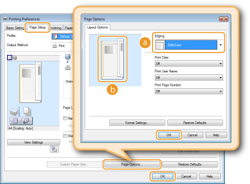

Printing Borders
 |
You can add borders, such as broken lines or double lines, in the margins of printouts.
|
[Page Setup] tab  Click [Page Options] Select the border type in [Edging] [OK] [OK]
Click [Page Options] Select the border type in [Edging] [OK] [OK]

 [Edging]
[Edging]
Selects the type of border to add to the document.
 Preview
Preview
Displays a preview with the selected border.